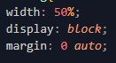

.hola display: flex; justify-content: center; align-items: center;
margin: 0 auto;
Una imagen es en inline, pero debe de estar en un contendor de block. Un
p, article, section, etc.
para centrar una imagen sola, sin un contendor:

Todo lo demás se pone en línea. Los elementos que van dentro de < p>;
strong, em, etc. son inline aunque
< p> es en bloque.
Con un
text-align: center; se centra todo, excepto la imagen, como ya se ha
mencionado.
Las imágenes sin embargo, hay que controlar el tamaño de la misma, ya
que si ocupa el 100% del ancho del viewport y de su contenedor no se
apreciará. Su tamaño va a acorde al tamaño de su contenedor. Sí el
contendor hace 50% de ancho, la imagen debe de ser de un ancho menor
Para que los elementos en línea bajen de "línea, hay que usar < br >,
elemento en bloque u otro contenedor."
Algunos elementos como button , input, select, textarea y object son
inline, pero tienen display "inline-block" por defecto (pueden tener
dimensiones definidas).
.hola
display: flex;
justify-content: center;
align-items: center;
margin: 0 auto;